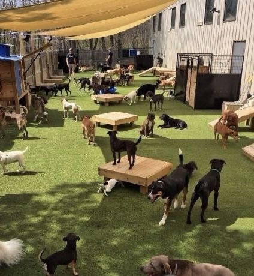
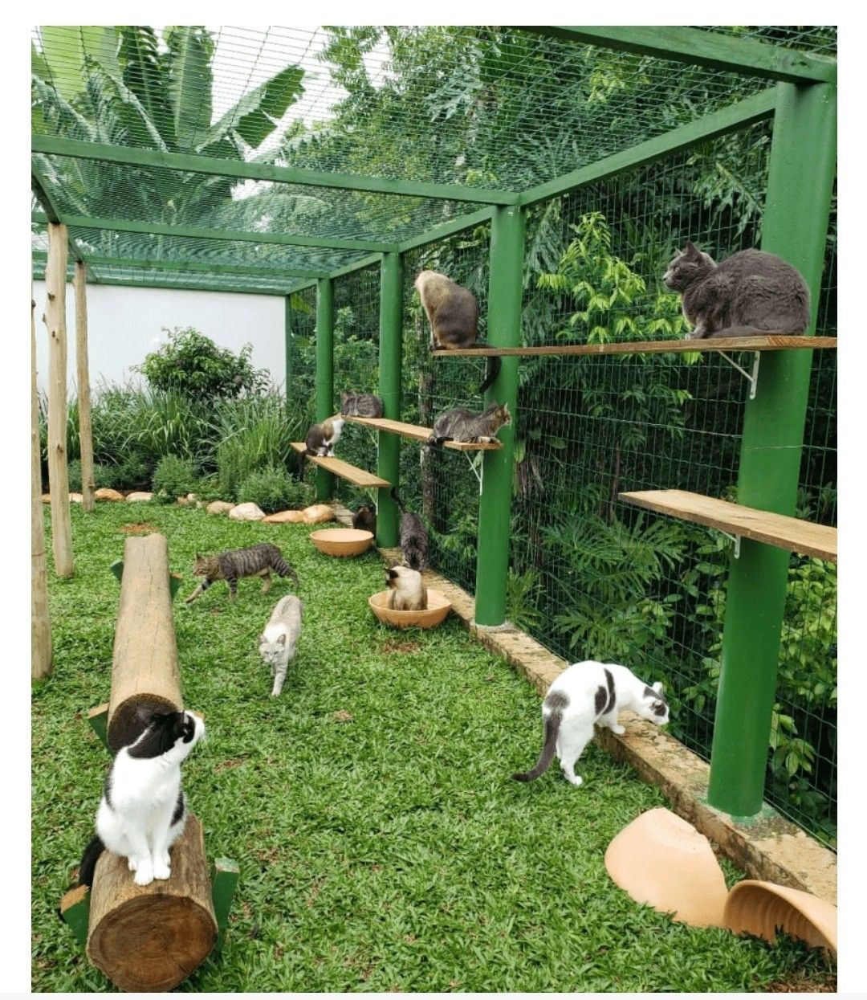
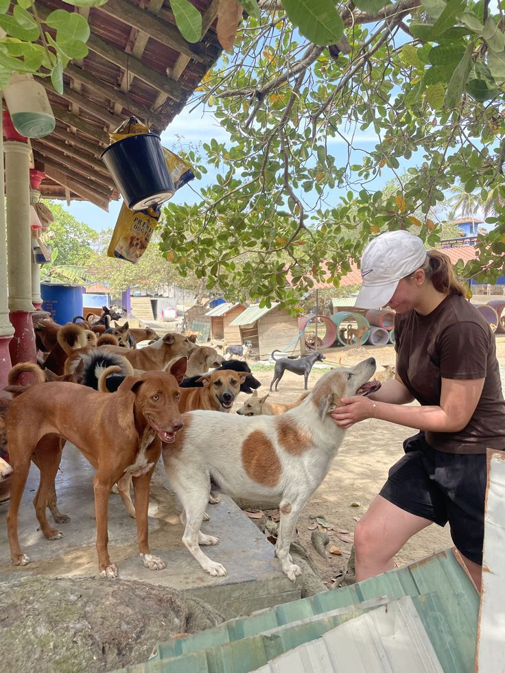
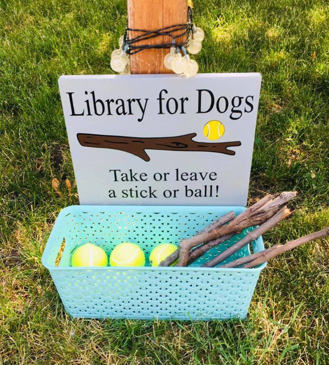
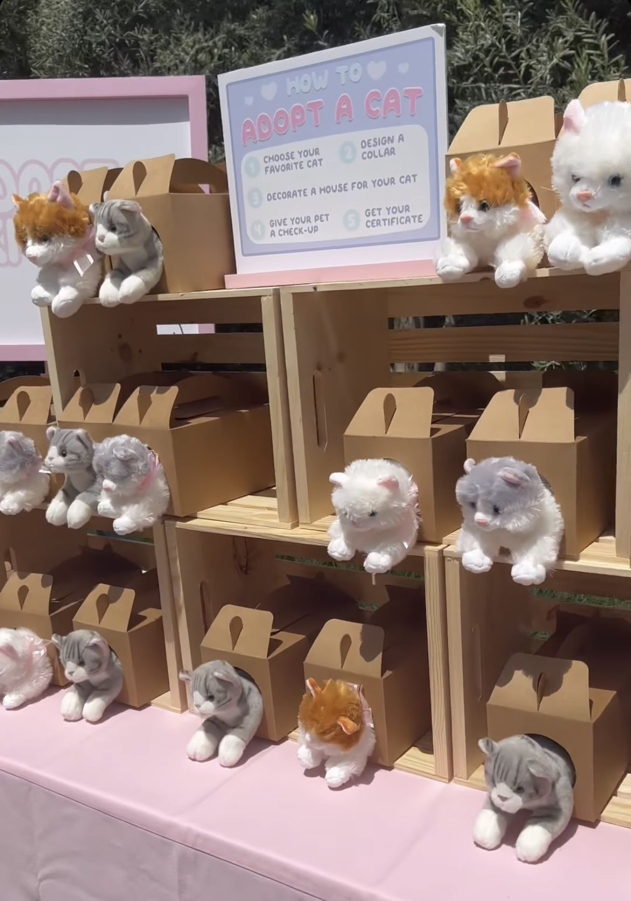

Refugio Dejando Huella
Un camino de huellas por un futuro mejor
¿Nuestro objetivo? Proteger y mejorar la vida de perros y gatos que han sufrido maltratos y abandono. Ademas de brindarles cuidados, les buscamos un futuro mejor.
¡Es el momento de actuar! ¡Hay una huella esperandote!
  Adopta una huella Sobre nosotrosNuestro plan de actuación
Rescate
Rehabilitación
Cuidados
Buscar nuevo hogar
Lo que necesitamos
Poder ayudar a todos los peludos en peligro es muy complicado y requiere de un alto nivel económico. ¡Necesitamos tu ayuda! Buscamos voluntarios que puedan ayudar en el refugio, y pequeñas contribuciones que ayuden a seguir dejando huellas en el camino.
Nuestro Blog
Si quieres estar al día de nuestras actividades, eventos y rescates, te recomendamos leer nuestro blog, donde ponemos todas las actualizaciones de nuestro refugio.
  Blog¿Podemos ayudarte?
Además de ocuparnos de estos peludos, también ofrecemos distintos tipos de servicios que tal vez te puedan ayudar, ¿buscas un animalito?, ¿buscas trabajar de voluntario?, ¿el lugar para la próxima excursión escolar? ¡Podemos ofrecerte eso y varias cosas más!
Más información